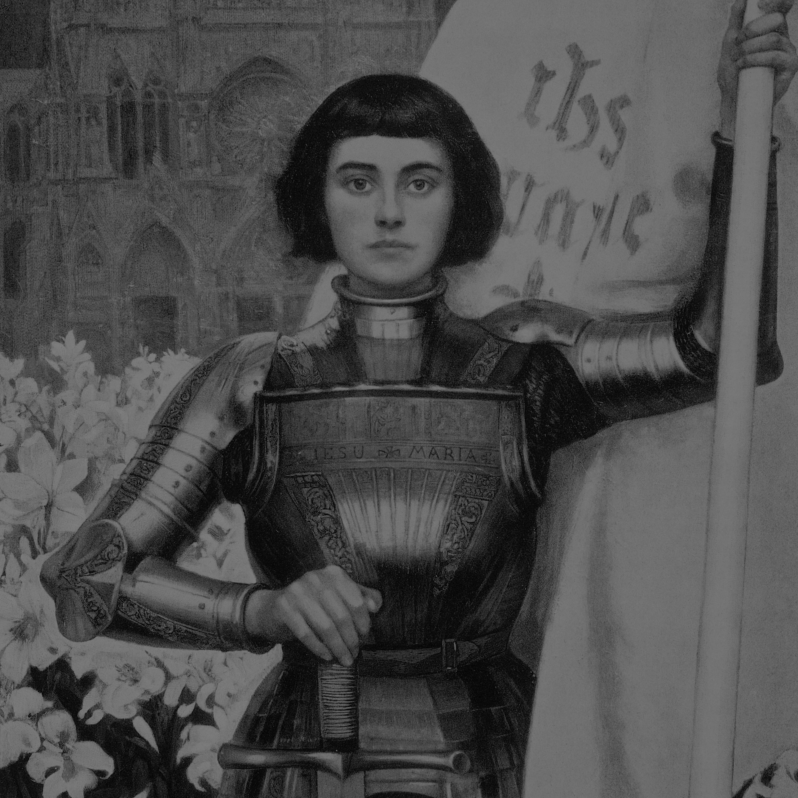
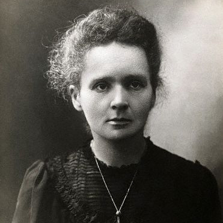
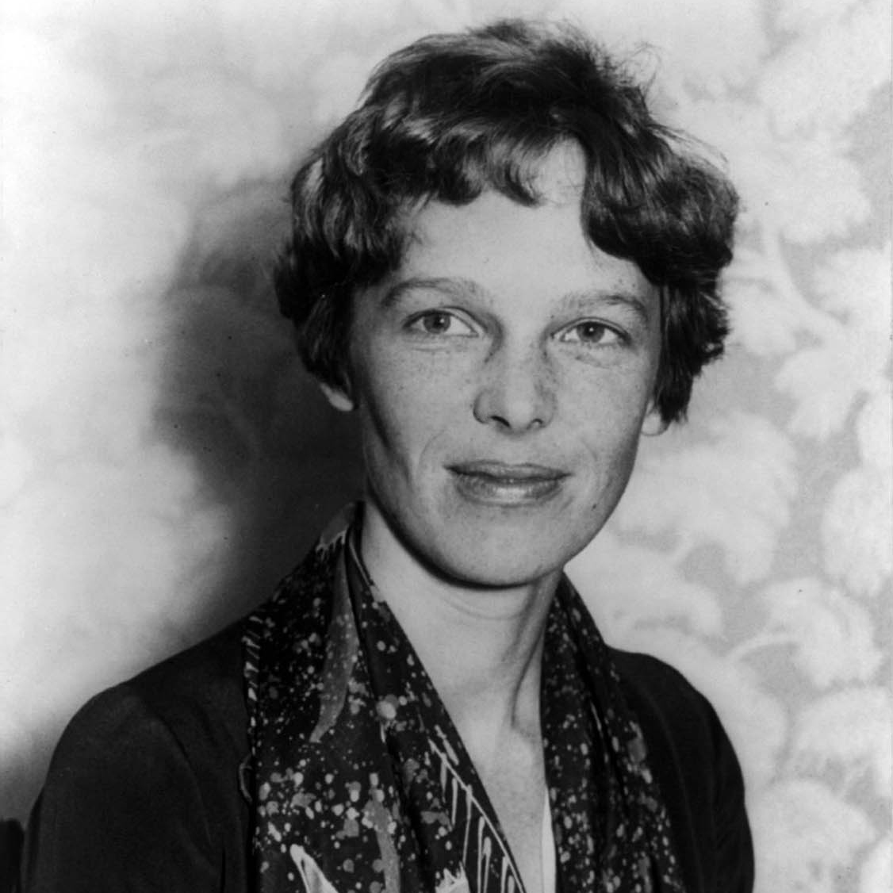
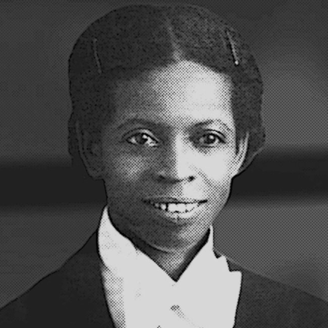

Joana d'Arc
Joana d'Arc foi uma heroína francesa nascida em 30 de janeiro de 1412, em Domrémy-la-Pucelle. Joana foi criada católica e teve sua primeira "revelação divina" aos doze anos, que dizia "Ides e tudo será feito segundo as vossas ordens". Depois desse evento, a jovem adotou a visão de que Deus a escolhera para expulsar os ingleses da França, na época em que a Guerra dos Cem Anos assolava a Europa. Em 1429, d'Arc saiu de sua aldeia e dirigiu-se a corte de Carlos VII. Após ganhar a confiança do mesmo, Joana recebe um peque no exército ao qual deve comandar para socorrer Orleães(Orléans), cidade francesa tomada por ingleses. Após concluir sua missão com sucesso, Carlos VII foi reconhecido como legítimo rei da França. Em 1430, parte para uma segunda campanha militar a fim de libertar a cidade de Compienha(Compiègne). Porém, em meio a uma batalha, foi raptada por ingleses. Joana d'Arc foi acusada de heresia e feitiçaria, e, em seguida, condenada a fogueira. A jovem guerreira foi queimada viva na Praça do Mercado Velho(ou Praça do Mercado Vermelho), em 1431. Joana foi canonizada pela Igreja Católica em 1920 e hoje é considerada uma santa.

Marie Sklodowska Curie
Marie Sklodowska Curie nasceu em Varsóvia, Polônia, em 1867. Sua mãe morreu quando ela era criança, então ela foi criada e educada por seu pai, que era professor. Em 1893, ela se tornou a primeira mulher a se formar em física na Universidade Francesa de Sorbonne e, em seguida, também se formou em matemática. Ela se casou com um professor universitário e pesquisador de longa data em 1895. Em 1903, ela ganhou o Prêmio Nobel de Física por estudos relacionados à radioatividade. Oito anos depois, ela ganhou seu segundo Prêmio Nobel de Química pela descoberta dos elementos químicos polônio e rádio. Marie Curie morreu em 4 de julho de 1934, aos 66 anso, após décadas de exposição à radiação em seu ambiente de trabalho, no sanatório de Sancellemoz, na cidade francesa de Passy.

Amelia Mary Earhart
Amelia Mary Earhart foi pioneira da aviação nos Estados Unidos e a primeira mulher a pilotar sozinha pelo oceano Atlântico, recebendo a condecoração The Distinguished Flying Cross (A Distinta Cruz Voadora) por ter realizado o feito. Ela nasceu em 24 de julho de 1897 em Atchison, Kansas. Earhart tinha grande interesse por literatura e ingressou na 1° série com 12. Em 1917, fez treinamento de enfermagem pela Cruz Vermelha no Canadá para ajudar no tratamento de soldados feridos na Primeira Guerra Mundial. Quatro anos depois teve sua primeira experiência de voo, tornando-se a 16° mulher a obter licença para pilotar pela Federação Aeronáutica Internacional(FAI). Em 1925, foi para Boston. Amelia passou a fazer parte da Associação Nacional de Aeronáutica, sendo considerada uma das melhores pilotos dos EUA. Dez anos depois, ela empreendeu voo ao redor do mundo sozinha mas acabou não realizando o feito. Dois anos depois tentou novamente quando partiu de Costa Rica, passou pela América do Sul, África e Austrália, voando cerca de 22.000 milhas (35.420 km). Seu último contato foi em 2 de julho do mesmo ano e, infelizmente, nem seu corpo e seu avião foram encontrados.

Enedina Alves Marques
Enedina Alves Marques nasceu no dia 13 de janeiro de 1913, no Paraná. Ela era filha de um casal de negros provenientes do êxodo rural após a abolição da escravatura no Brasil, em 1888. De origem pobre e com uma grande família, Enedina cresceu na casa do Major Domingos Nascimento Sobrinho, onde trabalhava com sua mãe e recebia em troca uma boa educação. Em 1926, ingressou no Instituto de Educação do Paraná, enquanto trabalhava como doméstica e babá nas casas da elite curitibana para pagar seus estudos. Ela recebeu seu diploma de professora em 1932 e, partir desse ano, lecionou em escolas públicas do interior paranaense. Contudo, Enedina tinha o sonho de se tornar engenheira. Em 1945, finalmente realizou seu sonho após se formar em engenharia civil pela Universidade do Paraná. No ano seguinte, passou a trabalhar como auxiliar de engenharia na Secretaria de Estado de Viação e Obras Públicas e, em seguida, foi transferida para o Departamento Estadual de Águas e Energia Elétrica do Paraná. Enedina Alves Marques Trabalhou no desenvolvimento do Plano Hidrelétrico do Paraná em diversos rios do estado, com destaque para o projeto da Usina Capivari-Cachoeira. Ao final de sua vida, morava no Centro de Curitiba, onde foi encontrada morta aos 68 anos, vítima de ataque cardíaco, em 1981.